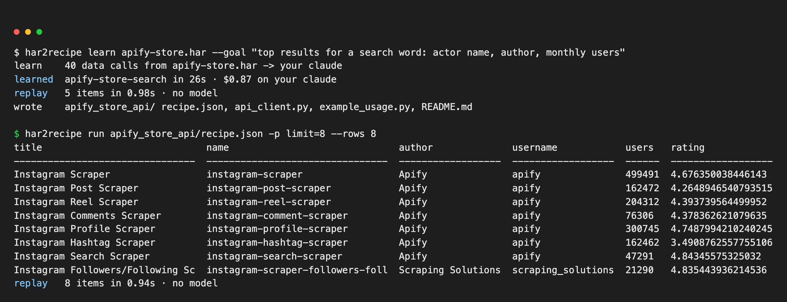

>_ har2recipe
Browse a site once. Get its hidden API as a Python client.
Export a HAR, describe what you want, and your own Claude Code writes a client plus a recipe. The recipe replays in about a second with plain HTTP: no browser, no model. verify tells you the day the site changes.
